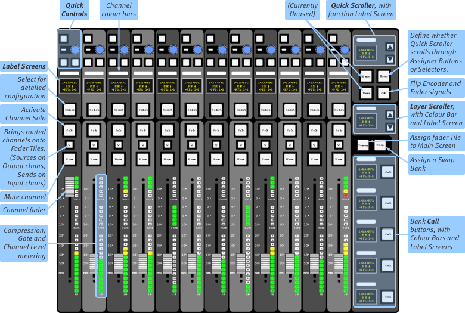
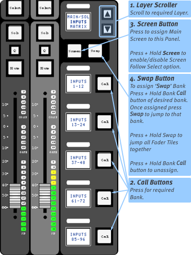
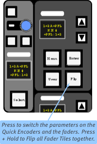

Fader Tiles
Tile buttons are backlit when they have a function available; they are lit with a colour when that function is engaged. If a button is not lit, then it likely does nothing in the current mode.
The layer and bank area on the right selects which paths are controlled on the faders.
Quick controls (three switches and encoder) at the top operate a variety of parameters, as assigned to them via the tile arrows or on-screen channel display. We'll look at Quick Controls in Tutorial.
The Screen button assigns that Fader Tile to the main screen.
The Q, or Query, button collects all paths sent to and from that path and brings them onto the other Fader Tiles. This is perfect for quickly addressing monitor mixes and making adjustments to sends.

Channel Faders
At the bottom of each channel strip is a fader. To the right of the fader, you will find metering for the compressor, gate and channel signal. Above the fader are four buttons:
Select assigns the channel to the Detail display, Control Tile, and Focus controls;
Solo routes the channel to the solo buses;
Mute silences the channel;
Q is used for viewing all routes to and/or from a channel, as described in Query.
Layers & Banks
Each Fader Tile addresses up to six layers, each layer contains five banks, and each bank has twelve faders. That makes for up to 360 unique faders per tile!

The six layers can be scrolled using the ▲ and ▼ arrows on the tile. The banks within that layer will be shown in the scribble displays near the call buttons.
Press Call and that bank's paths will appear on the 12 fader strips.
A bank may not automatically appear in the main touchscreen. Press Screen to assign that tile to the main screen. Press & hold Screen to toggle screen follows selection (Screen button lights green when enabled).
Tip: Screen will also call the Channel View to the screen if you are in another page.
Swap Bank
Swap can act as a shortcut to a bank of your choosing. To enable swap, press & hold the Call button of a bank until it briefly flashes. This is now the swap bank.
The Swap button can be used to quickly access that bank. This is useful to go from two important banks that may be within different layers.
Pressing and holding the Swap button swaps all Fader Tiles that are in the same swap state simultaneously.

Fader Flip
The parameter of the fader and the Quick Encoder are switched, allowing the faders to be used to perform fine adjustments to Quick Control functions. This is done using the Flip button, below the Quick Scroller (see right). Press the button again to deactivate it.
Notes:
Flip only affects the hardware faders, and not the faders found in the console screens. VCA adjustments will still act on the channel signal, not the Quick Encoder parameter.
The Flip button acts on a per-Tile basis. Press & hold the Flip button to toggle Flip for all Fader Tiles.
The Focus and Main Faders (described in the next section) cannot be flipped.